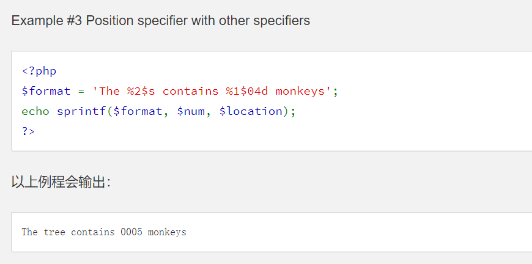

审计小知识1
file_put_contents、copy、file_get_contents等读取写入操作与unlink、file_exists等删除判断文件函数之间对于路径处理的差异导致的删除绕过¶
1 2 3 4 5 6 7 8 9 | <?php $filename = __DIR__ . '/tmp/' . $user['name']; $data = $user['info']; file_put_contents($filename, $data); if (file_exists($filename)) { unlink($filename); } ?> |
查看php源码，其实我们能发现，php读取、写入文件，都会调用php_stream_open_wrapper_ex来打开流，而判断文件存在、重命名、删除文件等操作则无需打开文件流。
我们跟一跟php_stream_open_wrapper_ex就会发现，其实最后会使用tsrm_realpath函数来将filename给标准化成一个绝对路径。而文件删除等操作则不会，这就是二者的区别。
所以，如果我们传入的是文件名中包含一个不存在的路径，写入的时候因为会处理掉“../”等相对路径，所以不会出错；判断、删除的时候因为不会处理，所以就会出现“No such file or directory”的错误。
于是乎linux可以通过xxxxx/../test.php、test.php/.windows可以通过test.php:test test.ph<来绕过文件删除
此外发现还可以使用伪协议php://filter/resource=1.php在file_ge_contents、copy等中读取文件内容，却可以绕过文件删除
extract()、parse_str() 等变量覆盖¶
extract函数从数组导入变量（$_GET、$_POST）,将数组的键名作为变量的值。而parse_str函数则是从类似name=Bill&age=60的格式字符串解析变量.如果在使用第一个函数没有设置EXTR_SKIP或者EXTR_PREFIX_SAME等处理变量冲突的参数时、第二个函数没有使用数组接受变量时将会导致变量覆盖的问题
intval()整数溢出、向下取整和整形判断的问题¶
- 32位系统最大的带符号范围为-2147483648 到 2147483647，64位最大的是 9223372036854775807，因此，在32位系统上 intval(‘1000000000000’) 会返回 2147483647
- 此外intval(10.99999)会返回10，intval和int等取整都是’截断’取整，并不是四舍五入
- intval函数进去取整时，是直到遇上数字或者正负号才开始进行转换，之后在遇到非数字或者结束符号（\0）时结束转换
浮点数精度问题导致的大小比较问题¶
当小数小于10^-16后，PHP对于小数就大小不分了
var_dump(1.000000000000000 == 1) >> TRUE
var_dump(1.0000000000000001 == 1) >> TRUE
is_numeric()与intval()特性差异¶
- is_numeric函数在判断是否是数字时会忽略字符串开头的’ ‘、’\t’、’\n’、’\r’、’\v’、’\f’。而’.’可以出现在任意位置，E、e能出现在参数中间，仍可以被判断为数字。也就是说is_numeric(“\r\n\t 0.1e2”) >> TRUE
- intval()函数会忽略’’ ‘\n’、’\r’、’\t’、’\v’、’\0’ ，也就是说intval(“\r\n\t 12”) >> 12
strcmp()数组比较绕过¶
int strcmp ( string $str1,string $str2 )
-
参数 str1第一个字符串。str2第二个字符串。如果 str1 小于 str2 返回 < 0；
-
如果 str1 大于 str2 返回 > 0；如果两者相等，返回 0。
但是如果传入的两个变量是数组的话，函数会报错返回NULL，如果只是用strcmp()==0来判断的话就可以绕过
sha1()、md5() 函数传入数组比较绕过¶
sha1（） MD5（）函数默认接收的参数是字符串类型，但是如果如果传入的参数是数组的话，函数就会报错返回NULL 类似sha1(GET[‘name′])===sha1(GET[‘name′])===sha1(_GET[‘password’])的比较就可以绕过
eregi()匹配绕过¶
eregi（）默认接收字符串参数，如果传入数组，函数会报错并返回NULL。同时还可以%00 截断进行绕过
PHP变量名不能带有点[.] 和空格，否则在会被转化为下划线[_]¶
1 2 3 4 5 6 7 8 | parse_str("na.me=admin&pass wd=123",$test); var_dump($test); array(2) { ["na_me"]=> string(5) "admin" ["pass_wd"]=> string(3) "123" |
in_arrary()函数默认进行松散比较（进行类型转换）¶
1 2 | in_arrary("1asd",arrart(1,2,3,4)) => true in_arrary("1asd",arrart(1,2,3,4),TRUE) => false \\(需要设置strict参数为true才会进行严格比较，进行类型检测) |
htmlspecialchars()函数默认只转义双引号不转义单引号，如果都转义的话需要添加上参数ENT_QUOTES¶
在php4、php<5.2.1中，变量的key值不受magic_quotes_gpc影响¶
sprintf()格式化漏洞（可以吃掉转义后的单引号¶
printf（）和sprintf（）函数中可以通过使用%接一个字符来进行padding功能
例如%10s 字符串会默认在左侧填充空格至长度为10，还可以 %010s 会使用字符0进行填充，但是如果我们想要使用别的字符进行填充，需要使用 ‘ 单引号进行标识，例如 %’#10s 这个就是使用#进行填充（百分号不仅会吃掉’单引号，还会吃掉 斜杠）
同时sprintf（）可以使用指定参数位置的写法

%后面的数字代表第几个参数，$后代表格式化类型
输入的特殊字符被放到引号中进行转义时，但是又使用了sprintf函数进行拼接时
例如%1$'%s' 中的 '%被当成使用%进行padding，导致后一个'逃逸了
还有一种情况就是'被转义成了\',例如输入%'and 1=1#进入，存在SQL过滤，'被转成了\'
于是sql语句变成了 select * from user where username = '%\' and 1=1#';
如果这个语句被使用sprintf函数进行了拼接，%后的\被吃掉了，导致了’逃逸
1 2 3 4 5 6 | <?php $sql = "select * from user where username = '%\' and 1=1#';"; $args = "admin"; echo sprintf( $sql, $args ) ; //result: select * from user where username = '' and 1=1#' ?> |
不过这样容易遇到 PHP Warning: sprintf(): Too few arguments的报错
这个时候我们可以使用%1$来吃掉转移添加的\
1 2 3 4 5 6 | <?php $sql = "select * from user where username = '%1$\' and 1=1#' and password='%s';"; $args = "admin"; echo sprintf( $sql, $args) ; //result: select * from user where username = '' and 1=1#' and password='admin'; ?> |
php中 = 赋值运算的优先级高于and¶
$c = is_numeric($a) and is_numeric($b) 程序本意是要a、b都为数字才会继续，但是当a为数字时，会先赋值给a为数字时，会先赋值给c，所以可能导致$b绕过检测
parse_url与libcurl对与url的解析差异可能导致ssrf¶
- 当url中有多个@符号时，parse_url中获取的host是最后一个@符号后面的host，而libcurl则是获取的第一个@符号之后的。因此当代码对
http://user@eval.com:80@baidu.com进行解析时，PHP获取的host是baidu.com是允许访问的域名，而最后调用libcurl进行请求时则是请求的eval.com域名，可以造成ssrf绕过 - 此外对于
https://evil@baidu.com这样的域名进行解析时,php获取的host是evil@baidu.com，但是libcurl获取的host却是evil.com
url标准的灵活性导致绕过filter_var与parse_url进行ssrf¶
filter_var()函数对于http://evil.com;google.com 会返回false也就是认为url格式错误，但是对于0://evil.com:80;google.com:80/ 、0://evil.com:80,google.com:80/、0://evil.com:80\google.com:80/却返回true.
通过file_get_contents获取网页内容并返回到客户端有可能造成xss¶
1 2 3 4 5 6 7 8 9 10 11 12 13 14 15 | if(filter_var($argv[1], FILTER_VALIDATE_URL)) { // parse URL $r = parse_url($argv[1]); print_r($r); // check if host ends with google.com if(preg_match('/baidu\.com$/', $r['host'])) { // get page from URL $a = file_get_contents($argv[1]); echo($a); } else { echo "Error: Host not allowed"; } } else { echo "Error: Invalid URL"; } |
虽然通过filter_var函数对url的格式进行检查，并且使用正则对url的host进行限定
但是可以通过data://baidu.com/plain;base64,PHNjcmlwdD5hbGVydCgxKTwvc2NyaXB0Pgo= 页面会将<script>alert(1)</script>返回给客户端，就有可能造成xss
弱类型¶
1 2 3 4 5 6 7 8 9 10 11 12 13 14 15 16 17 | md5(‘240610708’); // 0e462097431906509019562988736854 md5(‘QNKCDZO’); // 0e830400451993494058024219903391 md5(‘240610708’) == md5(‘QNKCDZO’) md5(‘aabg7XSs’) == md5(‘aabC9RqS’) sha1(‘aaroZmOk’) == sha1(‘aaK1STfY’) sha1(‘aaO8zKZF’) == sha1(‘aa3OFF9m’) ‘0010e2’ == ‘1e3’ ‘0x1234Ab’ == ‘1193131‘ ‘0xABCdef’ == ‘ 0xABCdef’ |
当转换为boolean时，以下只被认为是FALSE：FALSE、0、0.0、“”、“0”、array()、NULL
1 2 3 | PHP 7 以前的版本里，如果向八进制数传递了一个非法数字（即 8 或 9），则后面其余数字会被忽略。var_dump(0123)=var_dump(01239)=83 PHP 7 以后，会产生 Parse Error。 |
1 2 3 4 5 6 7 | 字符串转换为数值时，若字符串开头有数字，则转为数字并省略后面的非数字字符。若一开头没有数字则转换为0 \$foo = 1 + “bob-1.3e3”; // $foo is integer (1) \$foo = 1 + “bob3”; // $foo is integer (1) \$foo = 1 + “10 Small Pigs”; // $foo is integer (11) |
1 2 3 4 5 6 7 8 9 10 11 12 13 14 15 | ‘’ == 0 == false ‘123’ == 123 ‘abc’ == 0 ‘123a’ == 123 ‘0x01’ == 1 ‘0e123456789’ == ‘0e987654321’ [false] == [0] == [NULL] == [‘’] NULL == false == 0» true == 1 |